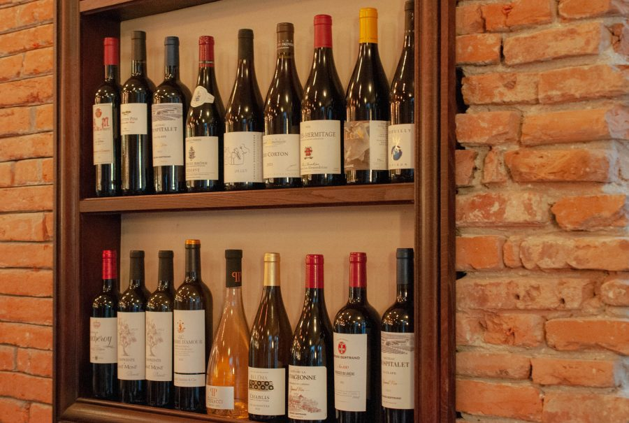
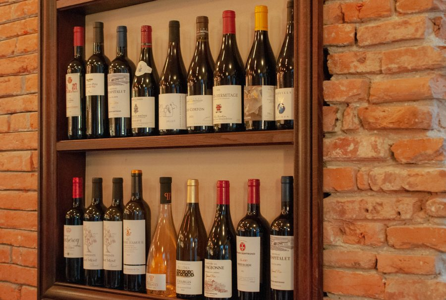
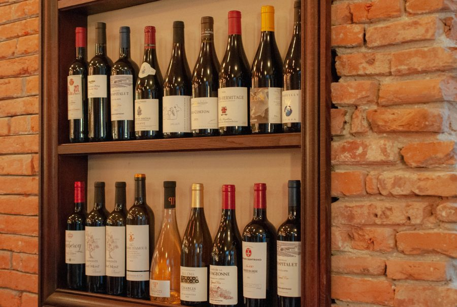

La tradition revue & corrigée

Lieu de vie chaleureux au cœur de Toulouse, Le Parisien vous accueille du petit déjeuner au dîner dans une ambiance conviviale et authentique.


Une cuisine bistrot, des produits simples et efficaces, des plats faits maison et une sélection de vins soigneusement choisie.

Une cuisine française traditionnelle, généreuse, fidèle aux classiques et aux saisons.
Réservations par téléphone
05 61 21 54 12
29 bis Boulevard de Strasbourg
Toulouse
Ouvert tous les jours